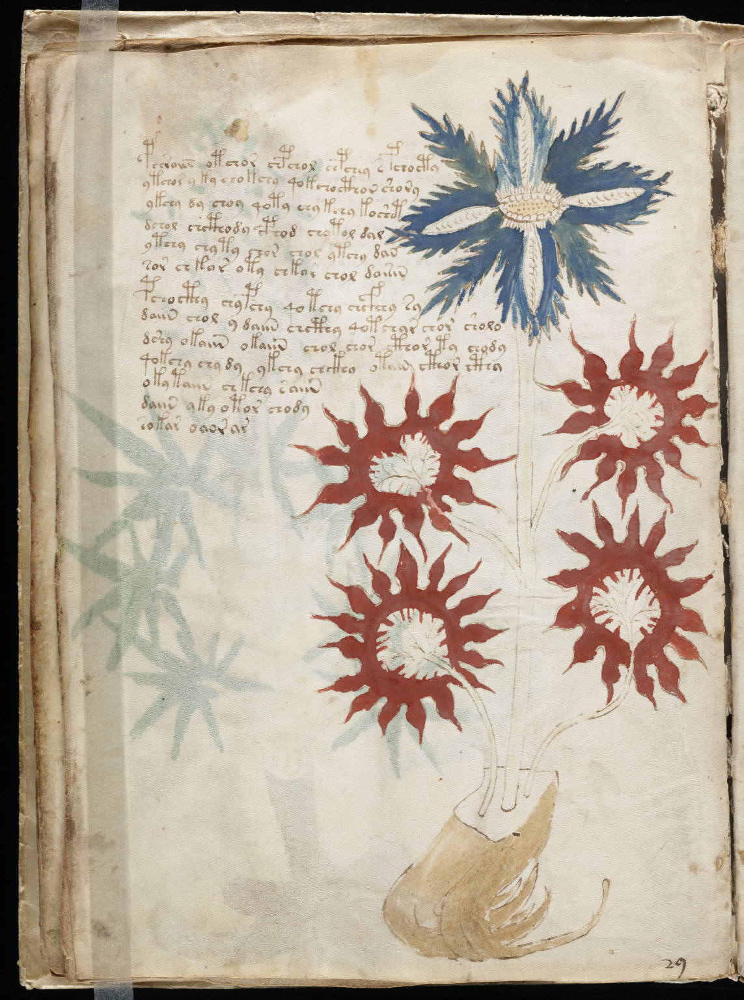

f16v
1pchraiin otchor chpchol chpchey s pchocty2ytchor y ky chokchy qokchocthor shory3ykchy dy choy qoty chy kchy koshet4dchol chcthody cphod chotol dal5ytchy chyty chor chol ytchy dan6sor chkar oty chkar chol dairin7pchocthy chypchy qotchy chcfhhy sy8daiin chol y daiin chcthy qotchar chor sholo9dshy okaiin okaiin chol chor cthor ty chody10qokchy chydy ykchy chckhy otain cthor cthy11okytaiin chkchy saiin12daiin yky otor chody13sokar oaorar
